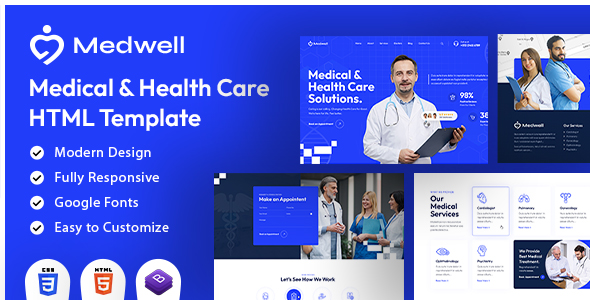

Created: 06 October, 2023
By: DesigningMedia.com
Support: www.designingmedia.com/support
Email: hello@designingmedia.com
Twitter: twitter.com/mediadesigning
Thank you for purchasing my template. If you have any questions that are beyond the scope of this help file, please feel free to post your questions on my support forum at http://designingmedia.com/support. Thanks so much!

Medwell Health Care Solutions HTML5 website template is a cutting-edge Html template meticulously crafted for the healthcare industry. Whether you're running a medical clinic, a hospital, a dental practice, a wellness center, or any healthcare-related business, this template is designed to elevate your online presence and streamline your digital operations. The template's sleek and modern design exudes trust and professionalism, making it perfect for healthcare institutions looking to make a lasting impression online.
It contains Home Page layout and about page layout and 04+ valid HTML5 page templates designs and different Blog page styles. Medwell template features are coded with Bootstrap v4.0, HTML5 & CSS3 and unlimited color schemes. It’s compatible with all modern browsers and search engine friendly. So showcase your artworks and services with this awesome template!
We have included 04+ custom HTML templates like Home Page style, About style and Services page style etc. Please open any HTML files with a text editor like Dreamweaver, Notepad or Notepad++ and edit any lines what you want.
We have included some custom CSS styles like custom.css (default). Please open any CSS files with a text editor like Dreamweaver, Notepad or Notepad++ and edit any lines what you want. For example if you want to edit your banner background custom.css and look at ".banner-con" for banner image and change your styles.
Please open style.css file from Medwell/assets/css folder with a text editor and build your own colors. #030d43 this is our primary color, you can search and replace all to your new color code.
We are aos.js on load animation for our website. you can edit them by simply adding or changeing the predefined classes name.
Note: All images are used for preview purposes only. They are not part of the template and hence, not included in the final purchase files.
Once again, thank you so much for purchasing this template. As I said at the beginning, I'd be glad to help you if you have any questions relating to this template. No guarantees, but I'll do my best to assist. If you have a more general question relating to the templates and templates on ThemeForest, you might consider visiting the forums and asking your question in the "Item Discussion" section.
Designing Media Team
Once again, thank you so much for purchasing this template. As I said at the beginning, I'd be glad to help you if you have any questions relating to this template. No guarantees, but I'll do my best to assist. If you have a more general question relating to the templates on ThemeForest, you might consider visiting the forums and asking your question in the "Item Discussion" section.
Designing Media Team